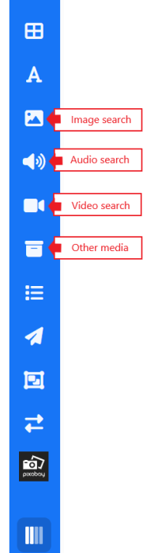
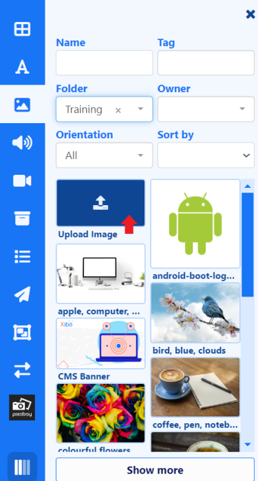
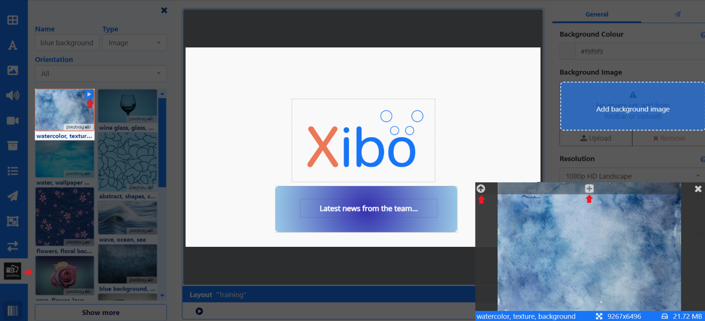

Library Search
Add media which already exists in the CMS Library to Layouts/Playlists using the Library Search function.
Library media consists of the following:
Other media search includes Flash, HTML Package, PDF and PowerPoint files available from the Type drop down menu.

Use the available filters to narrow down searches!
- Drag or select to highlight and click on the Layout to add.
- Position and resize.
- Configuration options will be shown in the Properties Panel.
New files of the selected type, can also be added from here:

- Click on the Library search for the media type you wish to add. If you want to add a file using the Other media search, ensure you have selected the file type from the drop down.
- Drag or click Upload to the Layout.
- Add files, optionally select a Folder and upload.
- On clicking Done, the file will be added ready for positioning/resizing and configuration.
Files that are uploaded directly to Layouts/Playlists will be automatically added to your CMS Library!
Remote Search
Integration from Pixabay gives users additional resources to Image and Video files which can be added to Layouts without having to leave the Layout Editor to source.
Pixabay integration is enabled by default for new Xibo in the Cloud customers.
If you are upgrading from an earlier version you will need to enable by navigating to the Administration section of the CMS and click Applications. Scroll down the page to the Connectors section. Click to Configure and tick to enable, Save changes.
Pixabay can be enabled from the Administration section of the CMS menu by clicking on Applications and scrolling down the page to the Connectors section. Click Configure and enter your API Key after signing up for a Pixabay account. PixabayAPI Documentation
- Click on Pixabay and select which Type of file to search.
- Enter search criteria in the Name field to return results.
- Drag or click to add, position/resize and configure.
Clicking the arrow in the top right of a thumbnail will play a preview in a separate window. This window can also be enlarged using the arrow in the top left and can be added to the Layout from here by clicking the
+button at the top.

Images/videos that are selected from Pixabay to be used will automatically be added to your Library and available for future use from the Image/Video Library Search functions!